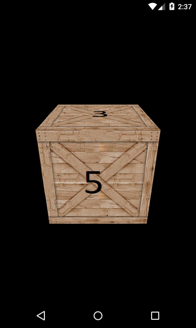
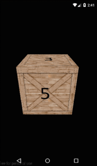
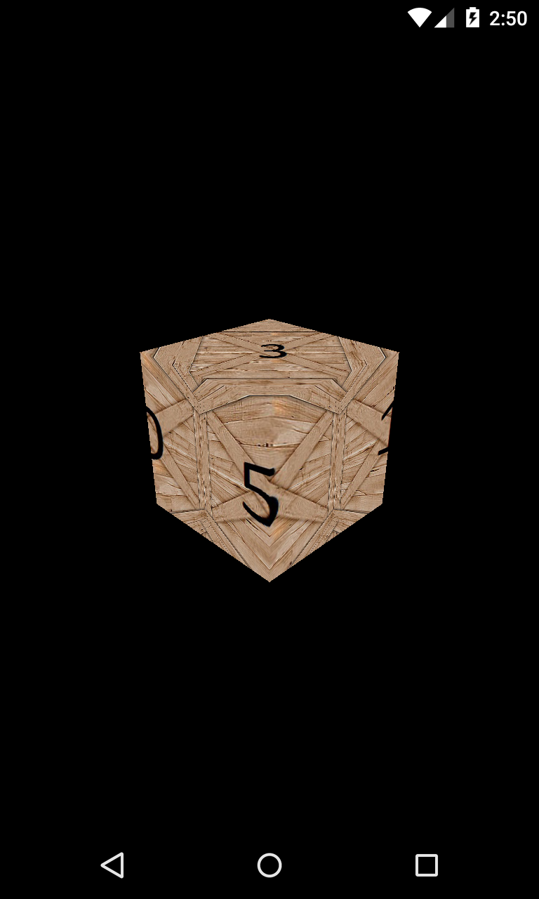
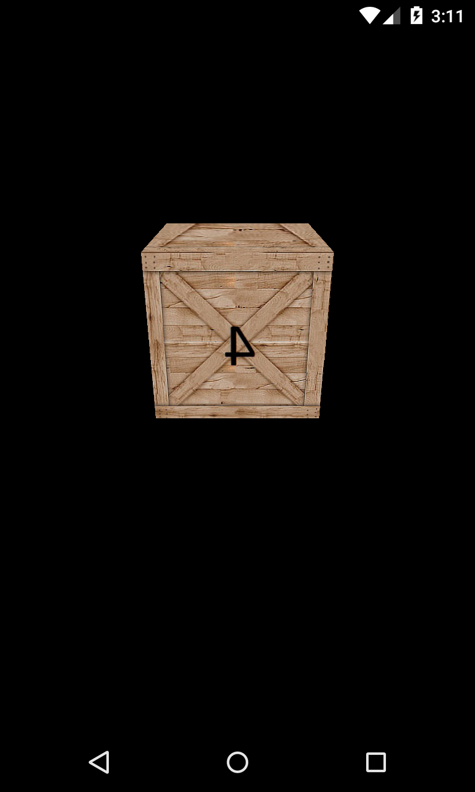

В этом уроке:
- используем индексы и текстуру для куба
На прошлом уроке мы узнали, как повесить текстуру на треугольник, и увидели, как из двух треугольников можно составить грань куба. Пример того урока вполне можно было дополнить до отображения полноценного куба, добавив остальные 5 граней и сопоставив их с координатами текстур.
В этом уроке мы будем рисовать куб, но задействуем для этого пару новых специфических штук, чтобы получилось проще.
Во-первых, будем использовать индексы. Это позволит немного сократить и упростить код. Сейчас, чтобы нарисовать куб, нам надо в массиве вершин указывать все вершины по нескольку раз, потому что каждая вершина используется в нескольких треугольниках, из которых состоят грани куба. В итоге массив вершин получается весьма сложным и громоздким. А если вдруг нам понадобится изменить координаты одной вершины, то надо будет найти все ее вхождения в массив вершин и менять их.
Вместо этого, мы можем сначала перечислить все 8 вершин куба в массиве вершин. А в отдельном массиве индексов уже задаем только номера (индексы массива) вершин для построения треугольников. Т.е. теперь в массиве (индексов) мы будем указывать по нескольку раз не вершины, а их номера. И если нам понадобится поменять координаты вершины, то надо будет просто найти эту вершину в массиве вершин и единожды поменять ее там.
Массив вершин мы будем передавать в вершинный шейдер, как атрибут. А массив индексов передаем в метод glDrawElements, который вызываем в onDrawFrame вместо обычного glDrawArrays.
Во-вторых, в этом уроке используем объект текстуру CUBE_MAP, а не 2D. Это специальный тип текстуры, который хранит в себе набор из 6-ти изображений. И если мы при рисовании куба, используем в фрагментном шейдере такой тип текстуры, то ее 6 изображений ровно лягут на 6 граней куба.
Этот тип текстуры, кстати, освобождает нас от необходимости привязывать координаты текстуры к вершинам. От нас просто требуется составить куб из 8 вершин, а система сама наложит на него текстуры.
Давайте смотреть код. Скачивайте исходники и открывайте модуль lesson176_texture_cube.
Начнем с класса TextureUtils. Он имеет метод loadTextureCube, который на вход принимает уже не один id ресурса, а массив. В этом массиве мы будем передавать шесть id ресурсов картинок, по одной на каждую грань.
Создание объекта текстуры остается без изменений. Затем создаем массив Bitmap и в него загружаем картинки по id ресурсов. Далее ставим активным слот 0 и в target GL_TEXTURE_CUBE_MAP помещаем наш созданный объект текстуры. Теперь мы можем настроить этот объект текстуры и поместить в него картинки.
Для начала, методами glTexParameteri настраиваем фильтрацию в GL_LINEAR для обоих режимов (подробности в Уроке 175).
Затем методами texImage2D помещаем картинки в текстуру. Но для этого мы используем не target GL_TEXTURE_CUBE_MAP, а его производные target-ы. Немного поясню, что они означают.
Центр куба, будет находиться в точке (0,0,0). А грани куба будут перпендикулярны осям X, Y и Z. Т.е. каждая ось будет проходить сквозь две грани, и эти две грани будут по разные стороны от нуля. Т.е. если взять, например, ось X, то на ней будет две точки пересечения с гранями: -1 и 1. Т.е. одну грань куба ось пересечет в точке -1, а вторую в точке 1. Соответственно, эти грани можно назвать как NEGATIVE_X и POSITIVE_X.
Аналогично грани Y и Z пересекут свои грани в значениях -1 и 1. И их грани можно обозначить как NEGATIVE_Y и POSITIVE_Y, и NEGATIVE_Z и POSITIVE_Z
Эти названия граней используются как target-ы при заполнении текстуры. От нас требуется указать какой грани, какую картинку сопоставить. И при рисовании на каждую грань, будет наложена соответствующая ей картинка.
В итоге, метод loadTextureCube принимает от нас массив из 6 картинок, создает объект текстуры и заполняет его этими картинками в target GL_TEXTURE_CUBE_MAP.
Смотрим класс OpenGLRenderer
Метод prepareData. В массиве vertices содержатся только 8 вершин. А массив indexArray содержит описание треугольников, составляющих грани куба, но вместо координат вершин, здесь используются индексы вершин из массива vertices.
В texture сохраняем id текстуры куба, созданной из 6 изображений ранее рассмотренным нами методом loadTextureCube.
Заметьте, что нет никаких координат текстур и сопоставлений их с вершинами, как в прошлом уроке. В случае с кубической текстурой шейдер сам разберется с этими вопросами.
В bindData передаем данные по вершинам в атрибут вершинного шейдера. Указываем, что будем использовать созданную ранее текстуру texture в слоте 0, target GL_TEXTURE_CUBE_MAP.
В onDrawFrame вместо glDrawArrays используем метод glDrawElements. Он требует от нас указать:
- какой тип примитивов рисовать
- сколько элементов из массива индексов брать для рисования
- какой тип данных используется в массиве индексов
- массив индексов.
Т.е. раньше мы методом glDrawArrays указывали сколько вершин использовать. И шейдер просто брал вершины по порядку из атрибута. А в метод glDrawElements мы передаем массив индексов, который явно указывает, какие вершины и в каком порядке брать из атрибута.
Вершинный шейдер vertex_shader.glsl
В a_Position (типа vec4) приходят данные по вершинам куба. Нам нужно эти данные передать во фрагментный шейдер в интерполированном виде и в формате vec3. Для этого мы используем varying vec3 переменную v_Position. Помещаем в нее только первые три компонента (xyz) переменной vec4.
В gl_Position передаем данные по вершинам, обработанные матрицей.
Т.е. во фрагментный шейдер мы передали данные по вершинам до того, как они подверглись обработке матрицей. Т.е. фрагментному шейдеру нужны именно вершины, которые мы задали в массиве вершин.
Фрагментный шейдер fragment_shader.glsl
uniform переменная, в которую мы помещаем номер слота, имеет тип samplerCube. Это (насколько я понял) означает, что в слоте с указанным номером шейдер будет искать кубическую текстуру.
Вызываем метод textureCube, который на вход требует указать ему номер слота, в который помещена текстура, и интерполированные данные по вершинам куба. Метод textureCube сам определит, какая грань сейчас рисуется, какую из 6 картинок, лежащих в текстуре, надо использовать, как сопоставить вершины и координаты текстуры.
Запускаем

Видим, что сверху грань 3. Это результат того, что картинку box3 мы поместили в target GL_TEXTURE_CUBE_MAP_POSITIVE_Y. Т.е. она легла на грань куба, которую пересекает положительная (верхняя) часть оси Y. Аналогично, грань 5 легла на грань куба, которую пересекает положительная (ближняя к нам) часть оси Z, т.к. box5 мы поместили в target GL_TEXTURE_CUBE_MAP_POSITIVE_Z.
Добавим вращение, чтобы посмотреть со всех сторон

Можно сверить остальные грани с соответствующими target, все должно быть так, как мы указывали в методе loadTextureCube.
Несколько замечаний
Чтобы шейдер правильно наложил текстуру на куб, необходимо чтобы центр куба был в точке (0,0,0) и чтоб грани куба были перпендикулярны осям координат.
Я попробовал нарушить эти условия и задать, например, такие вершины в массиве vertices:
-0, 0.7f, 1,
1, 0.7f, 0,
-0, -0.7f, 1,
1, -0.7f, 0,
-1, 0.7f, -0,
0, 0.7f, -1,
-1, -0.7f, -0,
0, -0.7f, -1
Т.е. вершины заданы так, что куб будет немного повернут и его грани будут неперпендикулярны осям.
Результат

Т.е. шейдер попытался наложить текстуры на грани соответственно их расположению относительно осей, но куб был задан некорректно, и текстуры легли на углы.
Также я попробовал центр куба сместить, например, на -2 по оси Z.
-1, 1, -1,
1, 1, -1,
-1, -1, -1,
1, -1, -1,
-1, 1, -3,
1, 1, -3,
-1, -1, -3,
1, -1, -3
Результат

Видно, что текстуры также легли криво.
Т.е. метод textureCube в фрагментном шейдере корректно отработает, только если центр куба будет в точке (0,0,0), а грани будут перпендикулярны осям.
В примере этого урока я использовал 6 разных картинок для наглядности. Разумеется, можно использовать только одну картинку, если у вас все грани куба должны быть одинаковы. В этом случае в метод loadTextureCube можно передавать не массив, а только один id, создавать один bitmap и вешать его на все 6 target.